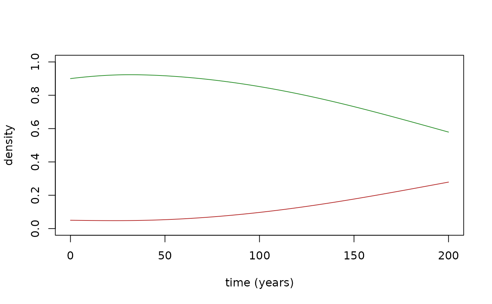

Integrates the mean-field ODE system describing the well-mixed limit of
the model and returns the full trajectory as a data frame. The equations
are written out in ForestFireR-model. The fire compartment is advanced
with its exact linear solution over each step while the vegetation block
is integrated with classic RK4, which keeps the integration stable at the
default L_30 = 1e6 (an explicit fixed-step RK4 on the fire term alone
diverges for any practical step size).
Usage
simulate_mean_field(
T,
n1_0 = 0.9,
n2_0 = 0.05,
n3_0 = 0,
n4_0 = 0.05,
n5_0 = 0,
xi_nat = 0.5,
xi_inv = 0.6,
eta_nat = 0,
eta_inv = 0.6,
L_01 = 0.03,
L_02 = 0.03,
L_12 = 0.005,
L_21 = 0.01,
L_30 = 1e+06,
Lig_13 = 0,
Lig_23 = 1e-04,
record_dt = NULL
)Arguments
- T
Simulation time horizon.
- n1_0, n2_0, n3_0, n4_0, n5_0
Initial densities for native, invader, fire, empty-after-vegetation-death and empty-after-fire respectively (should sum to 1).
- xi_nat, xi_inv
Fire-spread probabilities for native/invader, in
[0, 1)(seexi2lambda()).xi = 0.5is the spread/no-spread threshold (seexi2lambda()'s Details); the defaults here (xi_nat = 0.5,xi_inv = 0.6) put the native species right at that threshold and the invader moderately above it.- eta_nat, eta_inv
Native/invader post-fire regrowth probabilities (see
xi2lambda()). Defaulteta_nat = 0leaves the native species without a post-fire regrowth advantage; defaulteta_inv = 0.6gives the invader a moderate one.- L_01, L_02, L_12, L_21, L_30, Lig_13, Lig_23
Base rate constants; see
default_rates()for the baseline values. Override individual entries to explore parameter space, e.g.L_21 = 0.02.- record_dt
Trajectory sampling interval (must be
> 0; defaultT/200).
Examples
mf <- simulate_mean_field(T = 200, n1_0 = 0.9, n2_0 = 0.05, n4_0 = 0.05)
plot(mf$time, mf$n1, type = "l", col = "forestgreen", ylim = c(0, 1),
xlab = "time (years)", ylab = "density")
lines(mf$time, mf$n2, col = "firebrick")

# Without the invader's post-fire regrowth advantage the invasion fails
mf0 <- simulate_mean_field(T = 200, n1_0 = 0.9, n2_0 = 0.05, n4_0 = 0.05,
eta_inv = 0)
tail(mf0, 1)
#> time n0 n1 n2 n3 n4 n5
#> 201 200.01 0.01447898 0.9666663 0.01885467 3.732502e-10 0.000142318 0.01433667
# Residual burning density sustaining the feedback (see ForestFireR-model)
range(mf$n3)
#> [1] 0.000000e+00 1.108684e-08